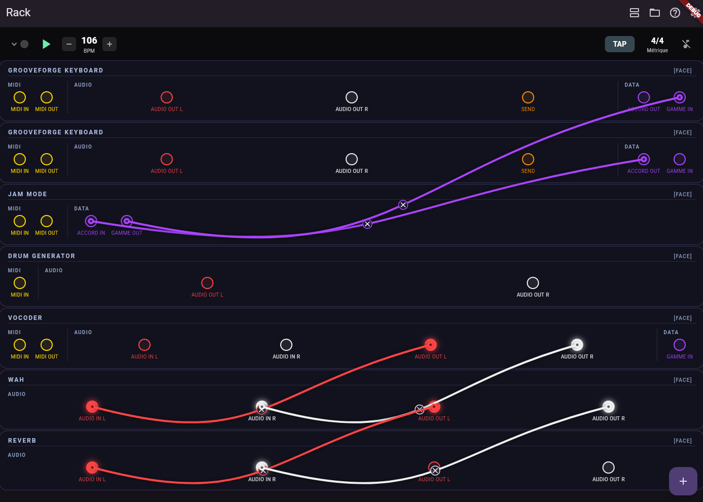

MIDI FX
Pure-Dart MIDI processing in the rack: chain transforms between your controller and your instruments.
What MIDI FX are
MIDI FX slots run a graph of built-in node types declared in a .gfpd file with type: midi_fx
(alias midifx). They do not generate audio by themselves — they reshape note, CC, and pitch-bend streams.
Examples: transpose every note, harmonize in thirds, expand single notes into chords, arpeggiate held notes, reshape
velocity, or gate events by threshold.
Wiring in the patch view
Open the back-of-rack view. Connect an instrument’s MIDI OUT (or a Virtual Piano / hardware path that feeds the chain) to the MIDI FX’s MIDI IN, then connect the FX’s MIDI OUT to the next instrument or another MIDI FX. Multiple chains and parallel branches follow the same rules as audio cables: compatible ports only.

Bundled MIDI FX plugins
| Plugin | Role |
|---|---|
| Transposer | Shift all note numbers by semitones; other MIDI passes through. |
| Harmonizer | Add parallel harmony voices from intervals. |
| Chord expand | Turn single notes into chord shapes (voicing selectable in the panel). |
| Arpeggiator | Step through held notes with rate and order controls. |
| Velocity curve | Remap note velocities along a curve. |
| Gate | Suppress notes below a velocity threshold. |
Bypass & hardware MIDI
Each MIDI FX header includes a power / bypass toggle and optional MIDI CC learn for bypass. When bypassed, events do not traverse that plugin (arpeggiators stop as expected).
Author your own
MIDI FX graphs use the midi_nodes: section in .gfpd instead of graph: audio nodes.
See Plugin descriptors (.gfpd) and the repository guide
HOW_TO_CREATE_A_PLUGIN.md.